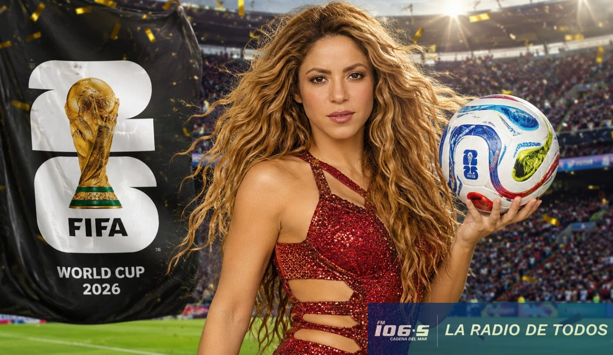
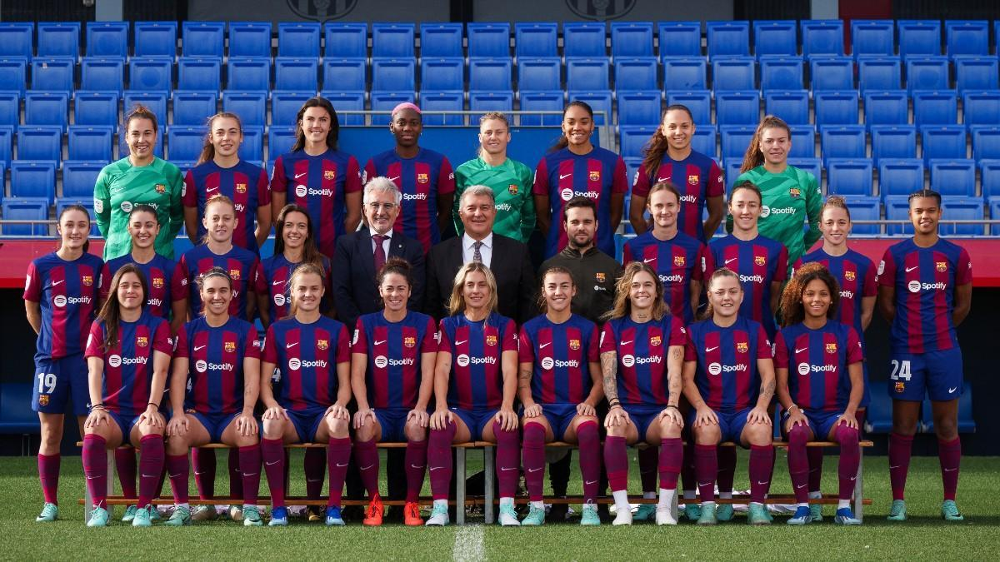

Lanzamiento del himno oficial del Mundial Femenino 2026
La canción oficial de la Copa Mundial Femenina de la FIFA 2026 fue presentada en una ceremonia especial. La pieza musical busca representar la fuerza, la unión y el talento de las mujeres en el fútbol mundial, reuniendo a artistas internacionales de distintos continentes.

Selecciones femeninas con plantillas confirmadas para el Mundial
Varias selecciones ya han anunciado sus convocatorias definitivas para la Copa Mundial Femenina. Entre las favoritas destacan Estados Unidos, España, Inglaterra y Brasil, quienes llegan con sus mejores jugadoras y grandes expectativas de título.
La competencia promete ser una de las más reñidas de la historia, con nuevas potencias emergentes como Marruecos, Nigeria y Jamaica que buscan sorprender a los grandes favoritos del torneo.
Las jugadoras más esperadas del Mundial Femenino
Nombres como Alexia Putellas, Sam Kerr, Trinity Rodman y Aitana Bonmatí serán las grandes protagonistas del torneo. Cada una llega en un gran momento de forma y con el objetivo de brillar en la cita más importante del fútbol femenino a nivel mundial.
La española Aitana Bonmatí, actual Balón de Oro femenino, buscará liderar a la selección española en la defensa del título mundial conquistado en 2023. Su nivel de juego y visión de campo la convierten en la jugadora a seguir durante toda la competición.
UEFA Champions League Femenina
La Champions Femenina vive su época dorada
La UEFA Women's Champions League se ha convertido en el escaparate más importante del fútbol femenino europeo. Cada edición supera en audiencia y calidad a la anterior, consolidándose como uno de los torneos más seguidos del mundo.
Clubes como el FC Barcelona, Chelsea, Lyon y Wolfsburgo han dominado la competición en los últimos años, ofreciendo partidos de altísimo nivel que han captado la atención de millones de aficionados en todo el mundo.
Barcelona Femení busca otro título europeo
El conjunto azulgrana es el gran dominador del fútbol femenino europeo en la última década. Con jugadoras como Aitana Bonmatí, Alexia Putellas y Salma Paralluelo, el Barça se presenta como el gran favorito para alzarse con el título de la Champions League femenina esta temporada.
Su estilo de juego ofensivo y su profundidad de plantilla las hace prácticamente imbatibles en Europa. Los números hablan por sí solos: más de 30 goles en la fase de grupos y una defensa que apenas ha concedido oportunidades a sus rivales.

Lyon, el eterno rival a batir en Europa
El Olympique de Lyon femenino es el club con más títulos en la historia de la Champions League femenina. Con más de siete coronas europeas, las francesas siguen siendo una potencia que ningún equipo puede ignorar en la competición continental.
Eurocopa Femenina
La Eurocopa Femenina 2026, el gran evento de Europa
La UEFA Women's Euro se ha convertido en una de las competiciones más importantes del calendario del fútbol femenino. La edición más reciente batió todos los récords de asistencia y audiencia televisiva, demostrando el crecimiento imparable de este deporte en el viejo continente.
España llegó como campeona defensora tras su histórico título en 2022, mientras que potencias como Alemania, Francia, Inglaterra y Suecia presentaron fuertes candidaturas para destronar a las actuales campeonas europeas.
Alemania apunta a recuperar su trono europeo
La selección alemana, una de las grandes potencias históricas del fútbol femenino europeo, trabaja con intensidad para volver a lo más alto del continente. Con una generación de jóvenes talentosas que combinan velocidad, técnica y capacidad goleadora, Alemania se perfila como uno de los equipos más peligrosos de la próxima Eurocopa.
Su liga nacional, la Frauen-Bundesliga, sigue produciendo jugadoras de altísimo nivel que nutren constantemente a la selección y la mantienen entre las favoritas al título en cada edición del torneo europeo.
Francia busca su primera corona en la Eurocopa
La selección francesa nunca ha ganado una Eurocopa femenina, pero cuenta con una de las plantillas más talentosas de Europa. Jugadoras como Kadidiatou Diani y Marie-Antoinette Katoto representan la nueva generación de un equipo que tiene hambre de historia y de conquistar su primer título continental.
Con una liga doméstica muy competitiva y una gran base de jugadoras que militan en los mejores clubes de Europa, Francia llega a cada Eurocopa como una de las grandes amenazas para las favoritas al título.
Inglaterra y la fiebre del fútbol femenino
Desde que las Leonas conquistaron la Eurocopa en 2022, el fútbol femenino en Inglaterra vivió una revolución sin precedentes. La afición creció exponencialmente, los estadios se llenaron y la Women's Super League se convirtió en una de las ligas más seguidas del mundo.
Jugadoras como Lauren Hemp, Beth Mead y Keira Walsh son ahora figuras reconocidas no solo en el deporte sino en la cultura popular británica, apareciendo en portadas de revistas y campañas publicitarias de grandes marcas internacionales.